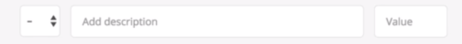

~~~~~~~~~~~~~~~~~~~~~~~~~~~~~~~~~~~
#### Creating _ctrlDeleteItem_ with Placeholders for Further Development
Before we can process delete an item, we must extract the *type* and *id* from the Event Object.
As we have before, we create placeholders to guide our development.
~~~~~~~~~~~~~~~~~~~~~~~~~~~~~~~~~~~JavaScript
var ctrlDeleteItem = function(event) {
var itemID, splitID, type, ID;
itemID = event.target.parentNode.parentNode.parentNode.parentNode.id;
if (itemID) { // If itemID not defined - will be False
// Break 'itemID' into type and ID values
// inc-1 - will return a array: ["inc","1"]
splitID = itemID.split('-');
type = splitID[0];
ID = splitID[1];
//1. Delete from the data structure
//2. Delete item from the UI
//3. Update and show the new budget
}
};
~~~~~~~~~~~~~~~~~~~~~~~~~~~~~~~~~~~
### Deleting an Item From Our Budget Controller
In this section:
* Yet another method to loop over an array: map
* How to remove elements from an array using the splice method.
We will add another public method to the Budget Controller Module. The *deleteItem* method skeleton is as follows:
~~~~~~~~~~~~~~~~~~~~~~~~~~~~~~~~~~~JavaScript
deleteItem function(type, id) {
// id = 3 // The id of the item to delete
// Now imagine the id's are [1 2 4 6 8]
},
~~~~~~~~~~~~~~~~~~~~~~~~~~~~~~~~~~~
Now you would think that a simplistic deletion statement such as
~~~~~~~~~~~~~~~~~~~~~~~~~~~~~~~~~~~JavaScript
data.allItems[type][id];
~~~~~~~~~~~~~~~~~~~~~~~~~~~~~~~~~~~
would work. The answer, sadly, is no! If the *id's* where stored in order it would work.
The problem is that as items are entered and deleted, the id's stored in the data structure for each *type* are *Not Sequential*. See example in code above. Thus, we will need a different strategy.
We must find the actual array index of the *id* location in the array, then perform a splice to remove the item at that index.
~~~~~~~~~~~~~~~~~~~~~~~~~~~~~~~~~~~JavaScript
deleteItem: function(type, id) {
var ids, index;
ids = data.allItems[type].map(function (current){
return current.id;
});
index = ids.indexOf(id);
if (index !== -1) {
data.allitems[type].splice(index, 1);
}
},
~~~~~~~~~~~~~~~~~~~~~~~~~~~~~~~~~~~
Given that we now have a delete method, lets use it in the *controller* Module. One problem that may be overlooked is that the *ID* value must be an integer, not a string. So we convert the string ID into a integer.
~~~~~~~~~~~~~~~~~~~~~~~~~~~~~~~~~~~JavaScript
var ctrlDeleteItem = function(event) {
:: :: :: ::
splitID = itemID.split('-'); // Produces two "strings"
type = splitID[0]; // Type as a string is correct
ID = parseInt(splitID[1]); // Convert ID from string to integer
//1. Delete from the data structure
budgetCtrl.deleteItem(type, ID)
//2. Delete item from the UI
//3. Update and show the new budget
}
};
~~~~~~~~~~~~~~~~~~~~~~~~~~~~~~~~~~~
### Deleting an Item from the UI
We will learn more about DOM manipulation:
* How to remove an element from the UI
The reference for DOM Manipulation: **blog.garstasio.com/you-dont-need-jquery/dom-manipulation**
Add a new public method: *deleteListItem*. Given the *itemID* is already available deleting the item is fairly easy.
The oddity about the process, *you can only delete a __child__*. This means you have to go up to the *parent of the item* we want to delete, and the delete the child item from the prospective of the parent..
~~~~~~~~~~~~~~~~~~~~~~~~~~~~~~~~~~~JavaScript
deleteListItem: function (selectorID){
var el;
el = document.getElementByID(selectorID); // Set 'el' to item to delete
el.ParentNode.removeChild(el); // Remove child from parent node
},
~~~~~~~~~~~~~~~~~~~~~~~~~~~~~~~~~~~
Now that we have the delete list item function, we can complete *ctrlDeleteItem* in the controller module. The only other thing we need is to update the budget and we already have the method.
~~~~~~~~~~~~~~~~~~~~~~~~~~~~~~~~~~~JavaScript
var ctrlDeleteItem = function(event) {
:: :: :: ::
//1. Delete from the data structure
budgetCtrl.deleteItem(type, ID)
//2. Delete item from the UI
UICtrl.deleteListItem(itemID) // Delete item from DOM
//3. Update and show the new budget
updateBudget(); // Update the Budget
}
};
~~~~~~~~~~~~~~~~~~~~~~~~~~~~~~~~~~~
## Project Planning Architecture: Step 3
First, here is what we have completed in Step 2.
![Figure [Version Two]: Budgety Version Two](budgety_version_two.png)
The following is our To-Do List for *Version Three* of the budgety program:
* Calculate percentages
* Update percentages in the UI
* We also have to display the *correct month* at the top of the display
* Improve Number Formatting in the UI display
* Improve input field UX
### Updating the percentages: Controller
First, we add new function named *updatePercentages* to the *controller*. As we have done in the past we insert placeholders for future code before starting. These placeholders will be replaced the methods defined in both the *budgetController* and the *UIController* Modules.
~~~~~~~~~~~~~~~~~~~~~~~~~~~~~~~~~~~JavaScript
var updatePercentages = function() {
//1. Calculate Percentages
//2. Read percentages for the budget controller
//3. update the UI with the new percentages
};
~~~~~~~~~~~~~~~~~~~~~~~~~~~~~~~~~~~
Now, we need to call this method from the controller. Notice we created a separate function for this operation, this is because it will be called in two places, *ctrlAddItem* and *ctrlDeleteItem*.
~~~~~~~~~~~~~~~~~~~~~~~~~~~~~~~~~~~JavaScript
var ctrlAddItem = function() {
:: :: ::
// 6. Calculate and update percentages
updatePercentates();
}
};
var ctrlDeleteItem = function() {
:: :: ::
// 4. Calculate and update percentages
updatePercentates();
}
};
~~~~~~~~~~~~~~~~~~~~~~~~~~~~~~~~~~~
### Updating Percentages: Budget Controller
How to make our budget controller interact with the Expense prototype. As usual we will create a skeleton with placeholders and comments to guide construction of the method.
~~~~~~~~~~~~~~~~~~~~~~~~~~~~~~~~~~~JavaScript
calculatePrecentages = function() {
// if a = 20 and income = 100 then the expense
// percentage will 20%. We will need a function
// on each expense node and income to calculate
// the percentage of each expense node.
//1. Calculate the expense percentage
//2. Get the expense percentage
},
~~~~~~~~~~~~~~~~~~~~~~~~~~~~~~~~~~~
#### Calculate Percentage and Store: Budget Controller
We will need to add a percentage property to our *Expense Constructor* and a public method to calculate the percentage in the expense prototype,
~~~~~~~~~~~~~~~~~~~~~~~~~~~~~~~~~~~JavaScript
var Expense = function(id, description, value) {
:: :: ::
this.percentage = -1;
};
Expense.Prototype.calcPercentage = function(totalIncome) {
if (totalIncome > 0) {
this.percentage = Math.round((this.value ./ totalIncode) * 100);
} else {
this.percentage = -1;
}
};
~~~~~~~~~~~~~~~~~~~~~~~~~~~~~~~~~~~
#### Get Percentage Value and Return to Caller
This public method returns the percentage for the selected Expense Item. While simple, remember that the percentage value is *not accessible* from outside the method. So we a need *getter method* to return internal values.
~~~~~~~~~~~~~~~~~~~~~~~~~~~~~~~~~~~JavaScript
Expense.Prototype.getPercentage = function() {
return this.percentage;
};
~~~~~~~~~~~~~~~~~~~~~~~~~~~~~~~~~~~
This is an example of good programming style: **each function/method should only perform one task**. Thus, we calculate the percentage and storing the result in an object property and in separate method return the internal property value to the outside world.
When choosing to loop over an array there are two common methods:
* __forEach__ - Executes the function on each element in the array, *but does return a value*.
* __map__ - Executes the function on each element in the array and *returns a value*.
### Update calculatePrecentages method using new expense method *calcPercentage*.
~~~~~~~~~~~~~~~~~~~~~~~~~~~~~~~~~~~JavaScript
calculatePrecentages = function() {
// if a = 20 and income = 100 then the expense
// percentage will 20%. We will need a function
// on each expense node and income to calculate
// the percentage of each expense node.
data.allItems.exp.forEach(function(cur) {
cur.calcPercentage();
});
},
~~~~~~~~~~~~~~~~~~~~~~~~~~~~~~~~~~~
### Update getPercentages method using new expense method *getPercentage*.
~~~~~~~~~~~~~~~~~~~~~~~~~~~~~~~~~~~JavaScript
getPercentages: function() {
var allPerc = data.allItems.exp.map(function(cur) {
return cur.getPercentage();
});
return allPerc; // Returns an array of percentages!
},
~~~~~~~~~~~~~~~~~~~~~~~~~~~~~~~~~~~
Notice that getPercentages returns an array, with one entry for each expense node traversed!
### Update Percentages: controller module
Now we will use the new Budget Controller methods to update percentages. We still need a UI Controller method update the display the results on the UI. However, we will just log the percentages now to insure our code is working.
This procedure of stopping development and just logging intermediate results is called **Milestone**. This allows a functional check of our modifications before we add more code. I for one, use **git** to store Milestone Points to allow stepping from one working version to the next.
~~~~~~~~~~~~~~~~~~~~~~~~~~~~~~~~~~~JavaScript
var updatePercentages = function() {
//1. Calculate Percentages
budgetCtrl.calculatePrecentages();
//2. Read percentages for the budget controller
var percentages = budgetCtrl.getPercentages();
//3. update the UI with the new percentages
console.log(percentages);
};
~~~~~~~~~~~~~~~~~~~~~~~~~~~~~~~~~~~
### Updating the Percentages: UI Controller
We will learn:
* How to create your own *forEach* function by for nodeLists instead of arrays.
One of our first tasks is update the DOM Strings Object with the class label of the target.
~~~~~~~~~~~~~~~~~~~~~~~~~~~~~~~~~~~JavaScript
container: '.container', // Add terminating comma
expensesPercLabel: 'item__percentage' // Add class name of target
};
~~~~~~~~~~~~~~~~~~~~~~~~~~~~~~~~~~~
The next thing we must create is a Display Percentages Method. To do this, we have to do is down load the instances of the label specified in the DOMStrings. This will return a Node List of the selected targets.
~~~~~~~~~~~~~~~~~~~~~~~~~~~~~~~~~~~JavaScript
displayPercentages: function(percentages) {
// Get Percentages Node List
var fields = document.querySelectorAll(DOMStrings.expensesPercLabel);
},
~~~~~~~~~~~~~~~~~~~~~~~~~~~~~~~~~~~
The reason a node list is returned is that each target element in the html file is called a "Node". These are collected by *querySelectorAll* and returned as a node list.
Now we could do "hack" and simply convert the *Node List* to an *Array*. However, what we want to do is a *forEach* over node list.
However, there is not a forEach method for node lists.
That being the case we will build our own *forEach Method*. I am starting with the completed code, as it easier to explain if you can the completed method.
~~~~~~~~~~~~~~~~~~~~~~~~~~~~~~~~~~~JavaScript.
var fields = document.querySelectorAll(DOMStrings.expensesPercLabel);
// Execute nodeListForEach
var nodeListForEach = function(list, callback) {
for (var i= 0; i < list.length; i++} {
callback(list[i], i);
}
};
// Nodelist forEach Method
nodeListForEach(fields, function(current, index) {
if (percentages[index] > 0) {
current.textContent = percentages[index] + '%';
} else {
current.textContent = '---';
}
});
},
~~~~~~~~~~~~~~~~~~~~~~~~~~~~~~~~~~~
### Completing the Update Percentages Method
Now we simply execute the method in the controller module replacing the console.log statement we used to exercise the Milestone code in the *updatePercentages* method.
~~~~~~~~~~~~~~~~~~~~~~~~~~~~~~~~~~~JavaScript
var updatePercentages = function() {
:: :: :: ::
// 3. update the UI with the new percentages
// Old code: console.log(percentages);
UICtrl.displayPercentages(percentages) // Replacement Code
};
~~~~~~~~~~~~~~~~~~~~~~~~~~~~~~~~~~~
## Formatting our Budget Numbers: String Manipulation
The number formatting is done in stages:
* Convert the number to an absolute number.
* Convert absolute number to a fixed point number with 2 decimal points.
* Spit the number into it's integer and decimal parts.
* If the length of the integer is less than a thousand - Do Nothing.
* Otherwise, place a comma between the third and fourth character.
* Return the combined sign, integer, and decimal values as a string.
The code for this private function is as follows:
~~~~~~~~~~~~~~~~~~~~~~~~~~~~~~~~~~~JavaScript
var formatNumber = function(num, type) {
var numSplit, inc, dec;
// Add '+' or '-' depending on type (inc or exp)
// Exactly 2 decimal points, and a comma if > 999.99
num = Math.abs(num);
num = num.toFixed(2);
numSplit = num.split('.');
int = numSplit[0];
if (int.length >3) {
int = int.substr(0, int.length - 3) + ',' + int.substr(int.length - 3, 3);
}
dec = numbSplit[1];
return (type === 'exp' ? '-' : '+') + ' ' + int + dec;
};
~~~~~~~~~~~~~~~~~~~~~~~~~~~~~~~~~~~
We now we can simply convert numbers in place by using the *formatNumber* function.
~~~~~~~~~~~~~~~~~~~~~~~~~~~~~~~~~~~JavaScript
addListItem: function(obj, type) {
:: :: ::
// 2. Replace the placeholder test with some actual data
newHtml = html.replace('%id%', obj.id);
newHtml = newHtml.replace('%description%', obj.description);
// newHtml = newHtml.replace('%value%', obj.value); // Old
newHtml = newHtml.replace('%value%', formatNumber(obj.value, type));
:: :: :: :;
},
~~~~~~~~~~~~~~~~~~~~~~~~~~~~~~~~~~~
We Also need to do the same thing in *displayBudget*.
However, there are a small problem in that the *type* is not available in this method! So first thing to do is create a variable called type, and setup to the proper value depending on the sign of budget! Then we replace the three values: **budget, income, and expenses**.
~~~~~~~~~~~~~~~~~~~~~~~~~~~~~~~~~~~JavaScript
displayBudget: function(obj) {
var type;
obj.budget >= 0? type = 'inc': type = 'exp';
document.querySelector(DOMStrings.budgetLabel).textContent
= formatNumber(obj.budget, type);
document.querySelector(DOMStrings.incomeLabel).textContent
= formatNumber(obj.totalInc, 'inc');
document.querySelector(DOMStrings.expensesLabel).textContent
= formatNumber(obj.totalExp, 'exp');
if (obj.percentage > 0) {
document.querySelector(DOMStrings.percentageLabel).textContent = obj.percentage + '%';
} else {
document.querySelector(DOMStrings.percentageLabel).textContent = '---';
}
},
~~~~~~~~~~~~~~~~~~~~~~~~~~~~~~~~~~~
## Displaying Current Month and Year
How to get the current date by using the _Date Object Constructor_
To display the date we need to create another public method in the UI Controller. We start by creating a new target in the DOMStrings
~~~~~~~~~~~~~~~~~~~~~~~~~~~~~~~~~~~JavaScript
var DOMStrings = {
:: :: :: ::
expensesPercLabel: '.item__percentage', // Add terminal comma
dateLabel: '.budget__title--month' // Add Date Target
};
~~~~~~~~~~~~~~~~~~~~~~~~~~~~~~~~~~~
Next we need to instantiate the *Date* Constructor and use it *retrieve the current year*:
~~~~~~~~~~~~~~~~~~~~~~~~~~~~~~~~~~~JavaScript
displayMonth: function() {
var now, months, month, year;
now = new Date(); // Returns todays Date.
months = ['January', 'February', 'March', 'April', 'May', 'June', 'July', 'August', 'September', 'October', 'November', 'December'];
month = now.getMonth();
year = now.getFullYear();
document.querySelector(DOMStrings.dateLabel).textContent = months[month] + ' ' + year;
},
~~~~~~~~~~~~~~~~~~~~~~~~~~~~~~~~~~~
Finally, we must call the method, and since it is only called once we will put in the init function.
~~~~~~~~~~~~~~~~~~~~~~~~~~~~~~~~~~~JavaScript
init: function() {
console.log('Program is Initialized!')
:: :: ::
UICtrl.displayMonth(); // Update Year Target
setupEventListeners();
}
~~~~~~~~~~~~~~~~~~~~~~~~~~~~~~~~~~~
## Finishing Touches: Improving the UX
How and When to use *'change"* events.
Currently, the input boxes are outlined in blue when selected. The problem is it always blue. What we want is to only outline in blue when enter incomes and change it to red when entering expenses.
To perform this action we will need to learn about a different type of event; *The Change Event*.
When for example you select the *Check Box(+/-)* it signals a possible change between *income and Expenses*. Making a select in the Check Box should trigger a *Change Event*. This means attaching an event handler to the *DOMStrings.inputType*.
~~~~~~~~~~~~~~~~~~~~~~~~~~~~~~~~~~~JavaScript
var setupEventListeners = function() {
:: :: :: ::
document.querySelector(DOM.inputType).addEventListener('change', UICtrl.changedType);
};
~~~~~~~~~~~~~~~~~~~~~~~~~~~~~~~~~~~
Now, to perform this change of color, we need to go to *style.css*. We need two different styles, *red* for the execute button, and
*red-focus* for the check-box (+/-) and text entry boxes(description, and amount). These will be managed by the *changedType* method in the UI Controller Module.
~~~~~~~~~~~~~~~~~~~~~~~~~~~~~~~~~~~JavaScript
.red { color: #FF5049 !important; } // Red for Button
.red-focus:focus { border: 1px solid #FF5049 !important; } // Red for Fields
~~~~~~~~~~~~~~~~~~~~~~~~~~~~~~~~~~~
The text entries are show below: **checkbox, description, value**.

The execute button looks as follows:
One more thing we will need is our *nodeListForEach* method we created for the *formatNumber* method. Since we wish to use it
again we will have to move it and make a *private function* available to all UI Controller methods.
Now that we have the *style* we need, and an event handler to call our UI Method *cheagedType* we can proceed with the method definition:
~~~~~~~~~~~~~~~~~~~~~~~~~~~~~~~~~~~JavaScript
changedType: function() {
var fields = document.querySelectorAll(
DOMStrings.inputType + ',' +
DOMStrings.inputDescription + ',' +
DOMStrings.inputValue);
nodeListForEach(fields, function(cur) {
cur.classList.toggle('red-focus');
});
document.querySelector(DOMStrings.inputBtn).classList.toggle('red');
},
~~~~~~~~~~~~~~~~~~~~~~~~~~~~~~~~~~~
**This completes the Budgety Program**